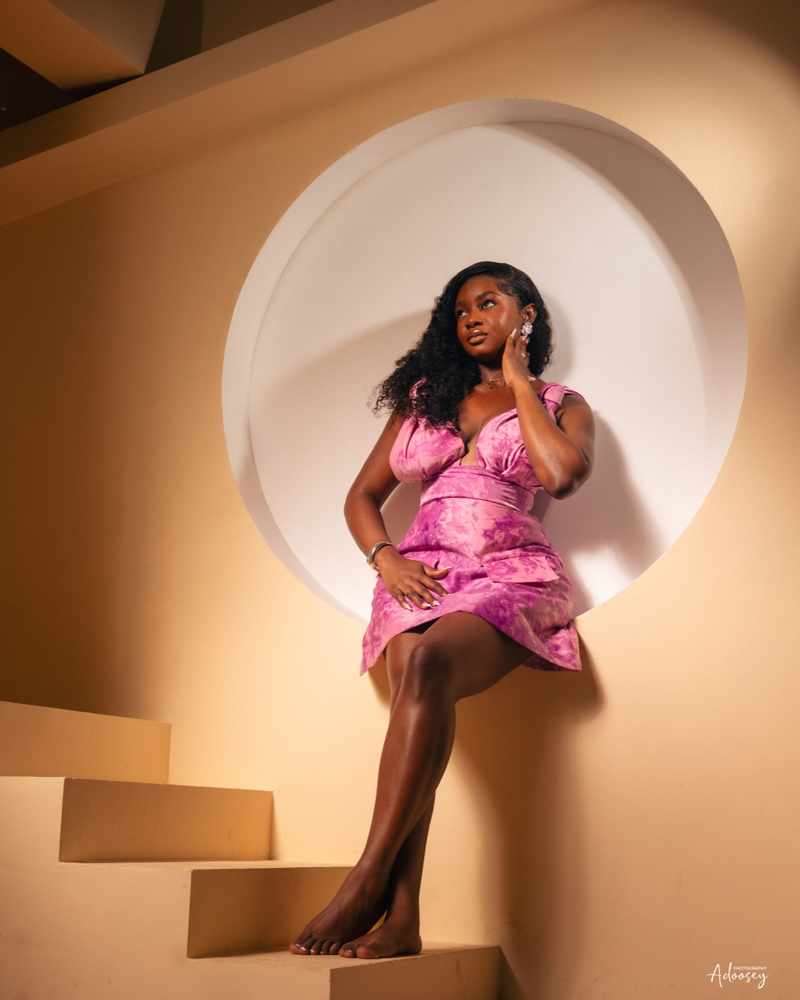
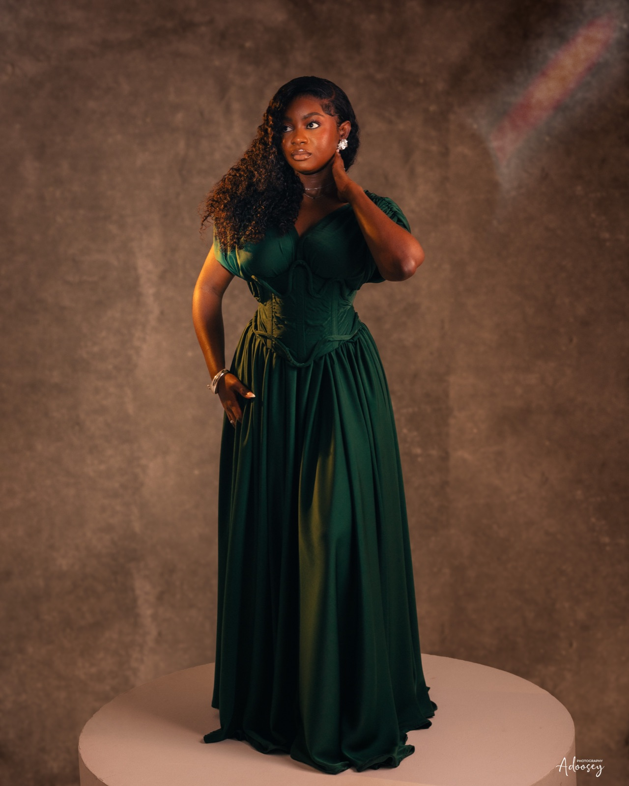
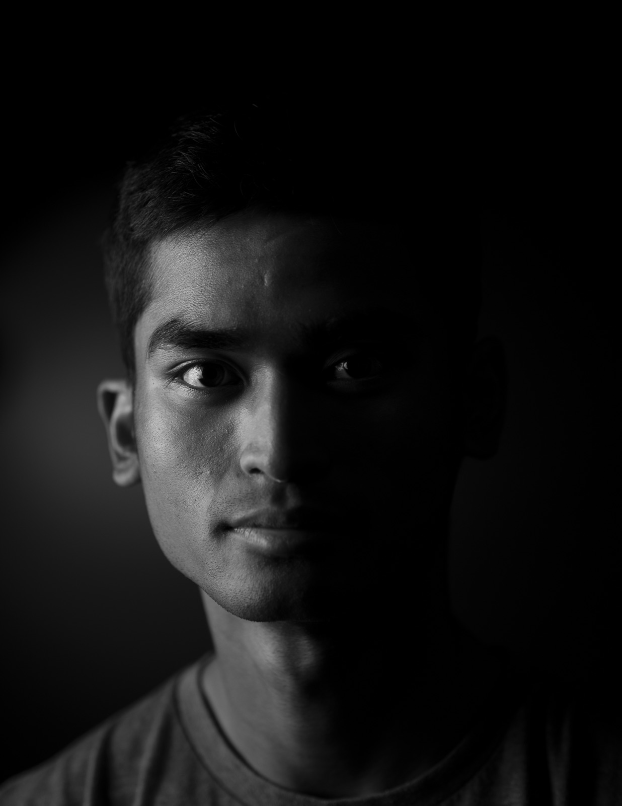
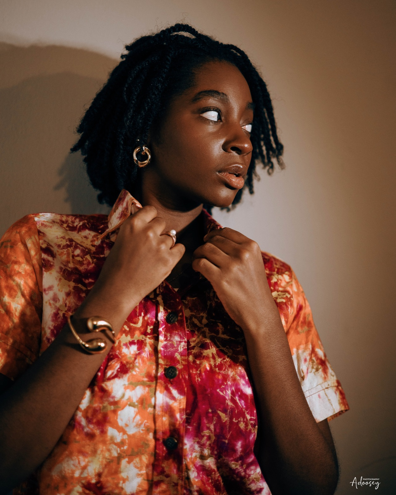
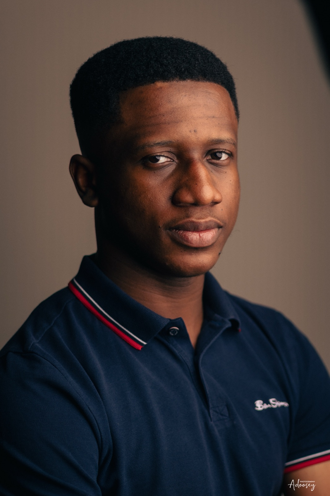
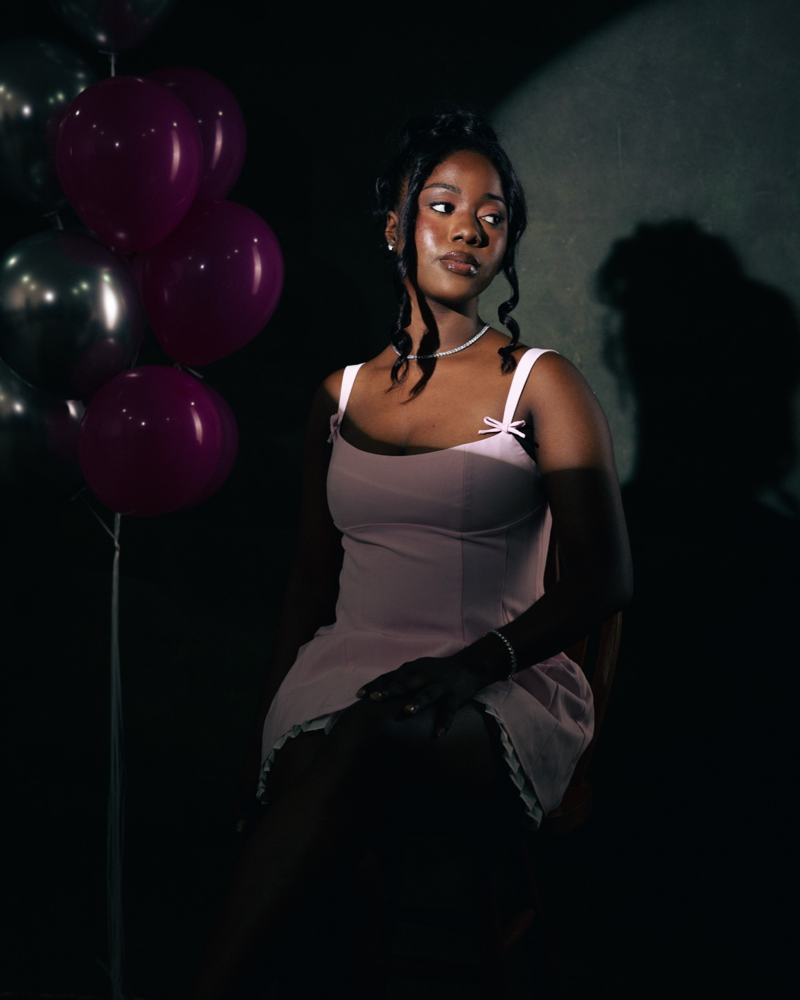
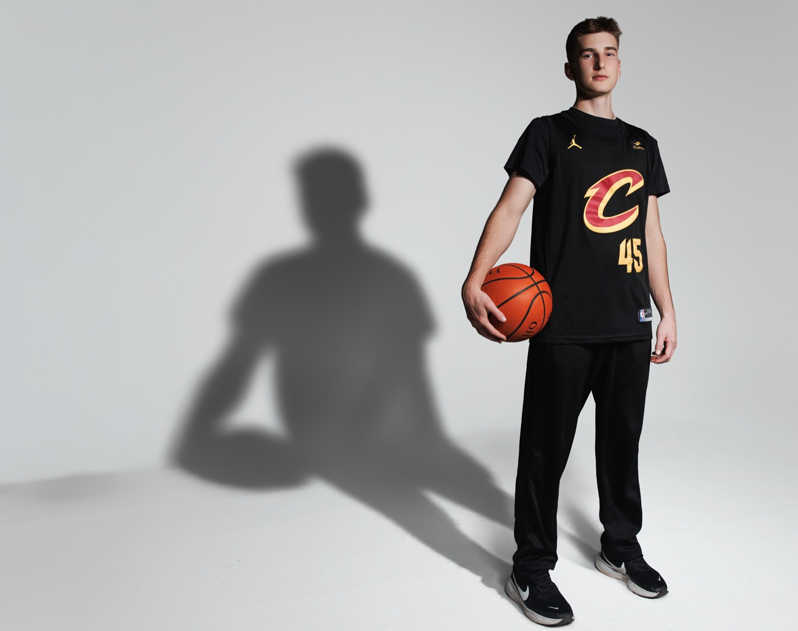
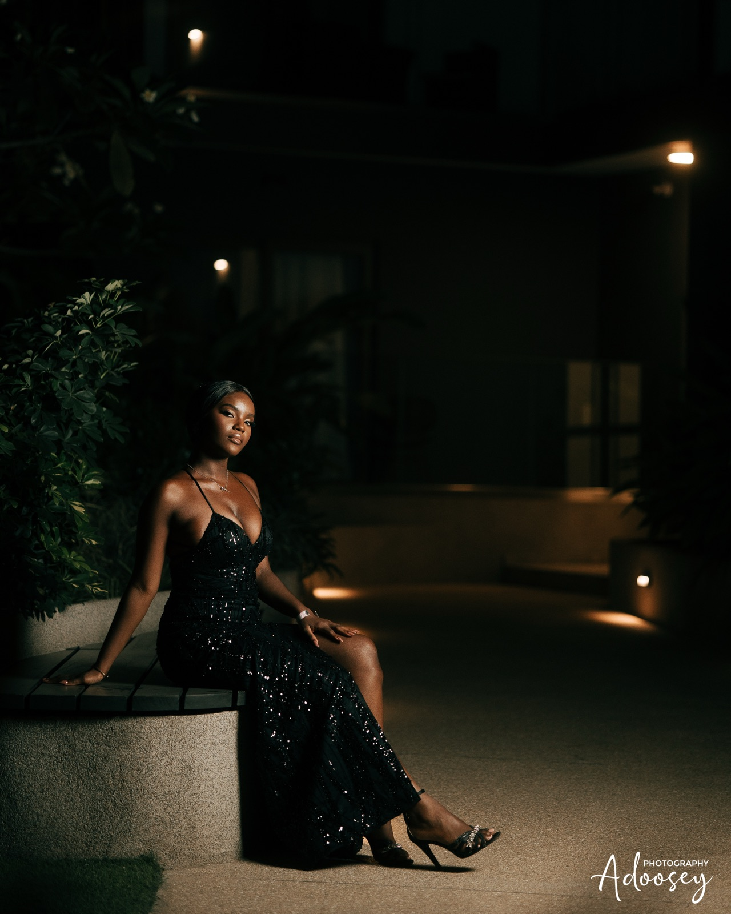
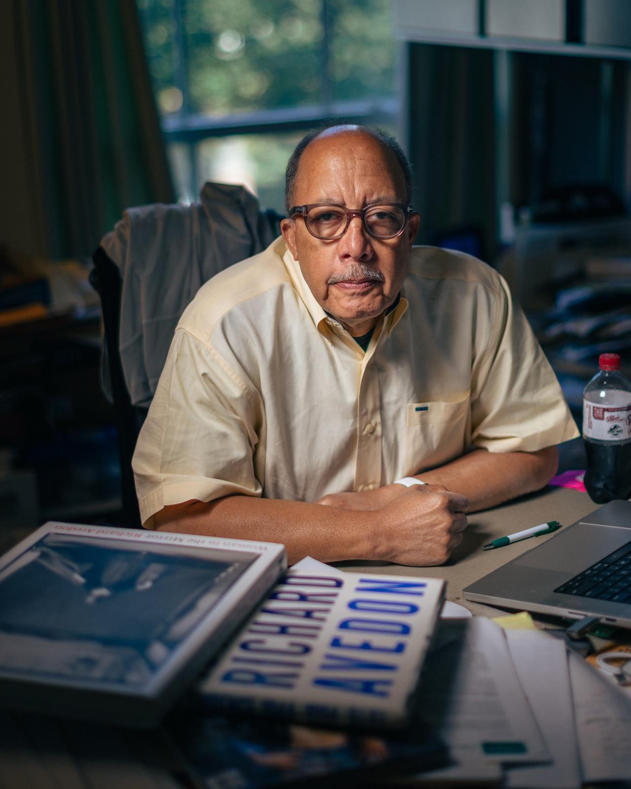
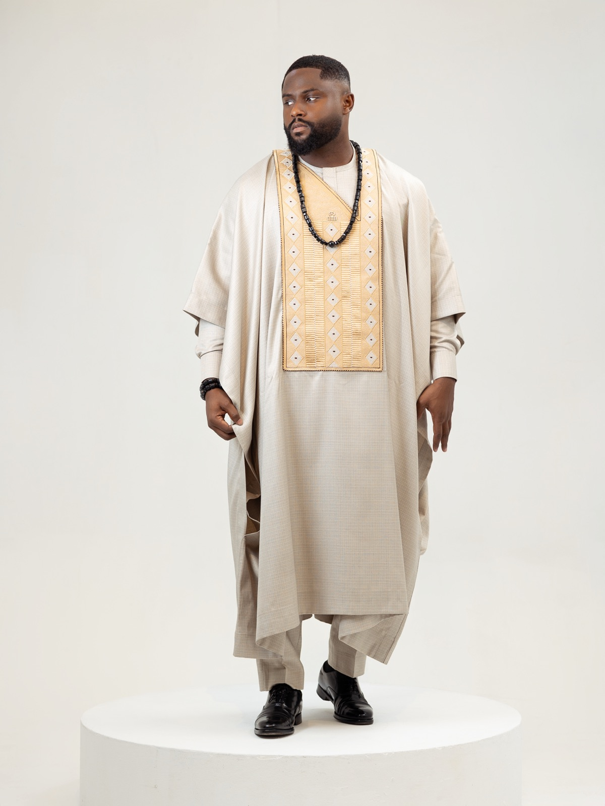

Portraiture
For my portrait projects, I began by getting to know each subject: who they were, what they wanted to achieve, and what they planned to use the pictures for. I then drew up a mood board together with them, so the look was shaped by their vision and not only mine. Depending on the concept, I shot in the studio or on location, setting up the lights and backdrops, choosing the environment, and directing the subject through the session. My goal on every portrait was to tell that person’s story in a single frame and bring their vision to life, so each result felt personal to the subject instead of coming from a template. I brought the same approach to headshots: we agreed on wardrobe, background and mood beforehand, and I adjusted the style to suit each person’s profession while keeping a polished, professional standard.










